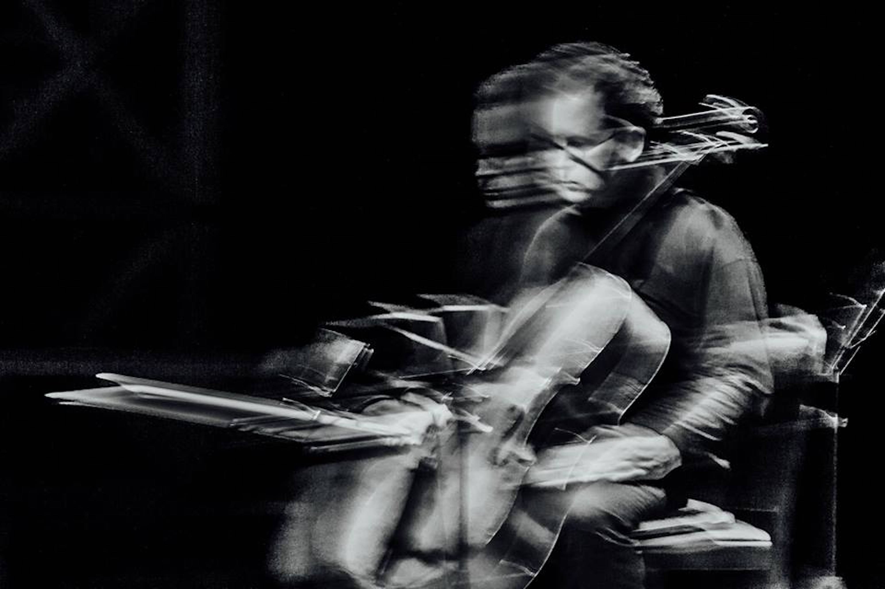

840: New Music for Cello and Piano
7.30pm, 21 September 2018 at the St James', Islington

For this programme, 840 has collaborated with with the cellist and inter-disciplinary artist Anton Lukoszevieze. Anton has had a distinguished career, commissioning and performing a huge range of experimental, avant-garde and improvised music, both as a soloist and as the founder of the group Apartment House.
Anton performed new works for solo cello by Christian Wolff, Darya Zvezdina, James Luff and Michael Winter, as well as Laurence Crane’s gem from 1985 Five Preludes for cello and piano. The programme also featured recent music by David Mahler, Alex Nikiporenko, Anton’s own What we really want to do is serve happiness and Linda Catlin Smith’s beguiling Ricercar.
Anton Lukoszevieze was joined by Alex Nikiporenko on the piano.